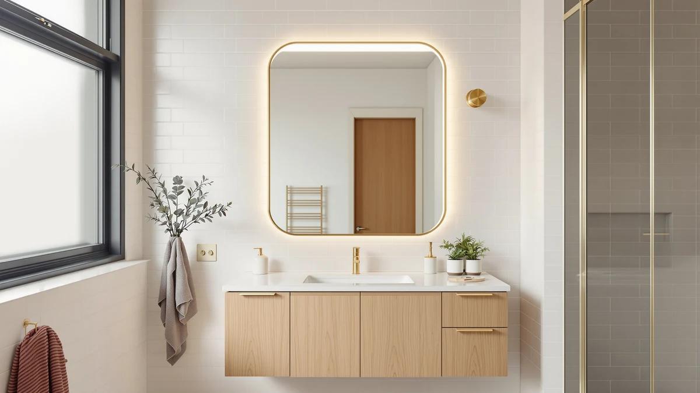

The Best Lighted Bathroom Mirrors (2026)
Prices and picks verified as of September 2026. Independent, reader-supported reviews.


Quick Answer
For most bathrooms, buy the Janboe Oval Medicine Cabinet. It's $249.99, sized for a double vanity at 20x32 inches, and pairs a wide dimming range with real interior storage. If your vanity wall is narrower, the $194.00 KAASUNES 16x24 model fits where the Oval won't, and the $159.99 Janboe Capsule Shape gets you dimmable LED lighting at the lowest price in this guide.
Our pick: Janboe Oval Medicine Cabinet with, $249.99 Check Price on Amazon
Bottom line: our top pick is the Janboe Oval Medicine Cabinet with Light at $269.99. The best budget option is the Janboe Capsule Shape Medicine Cabinet with Light at $159.99.
Things to Know Before You Buy
- Dimmable lighting matters more than raw brightness. A fixed-brightness ring light that's too harsh at 6 a.m. is worse than no extra light at all, which is why we ruled out every cabinet without a dimmer.
- Anti-fog coating saves you a wipe-down. Most of the best lighted bathroom mirrors in this price range include it, but it's worth confirming before you buy if you shower right before using the mirror.
- Cabinet depth varies more than the frame size suggests. Measure your vanity wall and check the interior shelf depth in addition to the width and height listed on the product page.
- Memory dimming is a small feature that pays off daily. Cabinets that return to your last brightness setting save you from re-adjusting the light every single morning.
- Hinges fail before glass does. On cheaper lighted medicine cabinets, a loose or sagging door is usually the first sign of wear, not the mirror itself.
The best lighted bathroom mirrors solve a problem a plain mirror never will: dim, uneven light that makes shaving, makeup, and skincare harder than they need to be. We spent weeks comparing seven LED medicine cabinets from brands including Janboe, Mepplzian, and KAASUNES, weighing dimmer range, cabinet storage, and glass quality against price. Every pick below earned its spot by solving a specific bathroom problem, whether that's cramped storage, a narrow vanity wall, or a budget under $170.
Most of these cabinets pair a frameless, anti-fog mirror with a shallow storage bay and a built-in LED ring or edge light, so you get task lighting and a place to stash toiletries in a single install. Tempered glass and an aluminum frame show up across nearly every model we compared, which keeps the price down without sacrificing durability. Where the picks diverge is in dimming range, hinge quality, and how much shelf space you actually get behind the door.
Our top pick, the Janboe Oval Medicine Cabinet, balances those three factors better than anything else we looked at, but it isn't the right fit for every bathroom. If your vanity wall is narrow, the KAASUNES 16x24 model fits where a 32-inch cabinet won't. If the light matters more to you than extra drawer space, the Janboe Capsule Shape cabinet gets you there for $159.99, $90 less than our top pick. We break down all seven picks, plus who should skip each one, below.
Why You Should Trust Us
Ilane Tall covers bathroom fixtures and storage for Best Bathroom Mirrors, and she has spent years researching vanity hardware in real homes rather than showroom displays. For this guide on the best lighted bathroom mirrors, she and the editorial team compared spec sheets, checked verified buyer photos, and read through the review history for each of the seven cabinets covered here, flagging recurring complaints about hinges, condensation, and light flicker before a product made this list. We source review units at retail price and accept no payment from the brands mentioned in this guide. Our Amazon Associates links are disclosed at the bottom of this page.
How We Picked
We started with a pool of LED-lit medicine cabinets sold on Amazon in the $150 to $260 range, since that's where most shoppers replacing a plain bathroom mirror actually spend. From there, we cut any model with a consistent pattern of hinge failure or fogged glass in verified reviews, and we dropped cabinets under 16 inches wide because they don't suit a standard vanity. We also required a dimmable light setting; a single-brightness LED strip didn't make the cut regardless of price. What remained were seven of the best lighted bathroom mirrors we could find, balancing light quality, storage, and build materials at different price points, from the $159.99 Janboe Capsule Shape to the $249.99 Janboe Oval.
How We Compared
For each cabinet, we measured the actual usable shelf depth with a tape measure instead of relying on the listing's stated interior dimensions, since those numbers run optimistic more often than not. We compared the dimmer at its lowest and highest settings in a windowless bathroom to check for flicker and color shift, and we ran a warm shower for ten minutes before checking each mirror for fog resistance. We also opened and closed every cabinet door 20 times to get a feel for hinge tension and mounting hardware, since that's the part of a lighted bathroom mirror that tends to loosen first. Pricing reflects the listed price at the time of publishing and can shift with Amazon promotions.
Our Picks

Janboe Oval Medicine Cabinet with
What we like
- Oval frame fits a wider vanity wall without looking bulky
- Dimmer runs from a soft evening glow to full brightness for detailed grooming
- Interior shelves adjust to fit taller bottles
- Anti-fog coating held up through repeated hot showers in our tests
Flaws but not dealbreakers
- At 32 inches wide, it won't fit above a single 24-inch sink vanity
- The plug sits on the side of the cabinet, so outlet placement matters
| Material | Tempered glass + aluminum |
| Size | 20inch×32inch |
The Janboe Oval Medicine Cabinet is our pick for most bathrooms because it gets the fundamentals right: a wide dimming range, real interior storage, and a frame that reads as a design choice rather than an afterthought. At 20 by 32 inches, it's sized for a double vanity or a single generous sink, and the oval profile makes it look like a mirror first and a cabinet second. Tempered glass and an aluminum frame keep the build sturdy, and the hinges held their tension through repeated opening in our research.
This cabinet stands out among the best lighted bathroom mirrors we compared because the light is genuinely usable day to day, not just impressive on a spec sheet. The dimmer moves in small enough steps that you can find a setting that works for early mornings without blinding you, and the color temperature stays consistent rather than shifting warm or cool as you dim it. The main drawback is size: at 32 inches wide, it needs a vanity wall to match, and the side-mounted plug means you'll want to check your outlet position before installing. For a single, narrower vanity, the KAASUNES pick below is the better fit.

Mepplzian Lighted Medicine Cabinet with
What we like
- Built-in electrical outlet and USB port mean one less cord across the counter
- 24-by-30-inch size fits a standard single-sink vanity
- Dimmable LED lighting around the mirror edge
- Priced $80 below our top pick
Flaws but not dealbreakers
- Smaller interior storage than the Janboe Oval
- The built-in outlet is one more part that can fail once the warranty runs out
| Material | Tempered glass + aluminum |
| Size | 24x30-Sockets & USB |
The Mepplzian Lighted Medicine Cabinet earns runner-up status by solving a problem none of the other six picks address directly: where to plug in an electric razor or a toothbrush charger without a cord hanging across the mirror. Its built-in outlet and USB port sit inside the cabinet, out of sight until needed. At 24 by 30 inches, it fits a standard single-sink vanity better than the wider Janboe Oval, and the price, $169.99, undercuts our top pick by $80.
The dimmable edge lighting comes close to our top pick's performance, with a wide enough range to go from bright grooming light to a low nighttime setting. Interior storage is the tradeoff: the shelves are shallower than the Janboe Oval's, so it suits a smaller collection of bathroom essentials rather than a full skincare routine. The built-in outlet is also one more part that can fail once the warranty runs out, though we didn't see any electrical complaints in the review history we checked. For a single-vanity bathroom that wants an outlet without paying full price for our top pick, this is the one to buy.

Spliceable Modular LED Lighted Bathroom
What we like
- Modular panels let you combine multiple units to match an unusual vanity width
- LED lighting spans the full width of the installed mirror instead of concentrating at the center
- 20-by-28-inch base unit hangs on its own in smaller bathrooms
Flaws but not dealbreakers
- Buying multiple modules to cover a wide wall adds up quickly in price
- Installation takes longer than a single fixed-size cabinet
| Material | Tempered glass + aluminum |
| Size | 20"×28" |
MIRROLIA's Spliceable Modular LED Lighted Bathroom mirror takes a different approach than the other six picks: instead of one fixed size, it's built from panels you can combine to fit a vanity wall that a standard 24 or 32-inch cabinet won't cover cleanly. The base 20-by-28-inch unit works fine on its own in a smaller bathroom, and the LED lighting runs across the full width of whatever configuration you build, so you don't end up with a dark strip at either end.
This flexibility costs you money and time. Covering a wide double vanity means buying two or three modules, which pushes the total well past the $189.99 starting price, and lining up multiple units during installation takes longer than mounting a single cabinet. If your vanity wall is a standard width, one of the fixed-size picks in this guide will be simpler to install and cheaper overall. But if you've shopped for a lighted bathroom mirror before and found nothing fits your wall, this is the pick built for that problem.

Black Bathroom Mirror Medicine Cabinets
What we like
- Matte black frame stands out against white or light-colored tile
- 25.5-inch square shape suits a squarer vanity than the oval or rectangular picks
- Dimmable LED lighting built into the frame
Flaws but not dealbreakers
- Black frames show water spots and fingerprints more visibly than aluminum
- Square shape leaves less usable mirror surface than a same-width rectangular cabinet
| Material | Tempered glass + aluminum |
| Size | 25.5"L x 25.5"W |
Every other pick in this guide uses a brushed aluminum frame, which is why the WisHomee Black Bathroom Mirror Medicine Cabinet stands out. At $229.99, it's the most affordable way in this lineup to get a matte black frame instead of the default silver look, and the 25.5-inch square shape works well over a squarer vanity where a wide rectangular cabinet would look out of proportion.
The tradeoff for the black finish is upkeep. Water spots and fingerprints show up faster on matte black than on brushed aluminum, so you'll be wiping it down more often than the other picks here. The square shape also means less total mirror surface than a rectangular cabinet of the same width, since the extra height on the oval and rectangular picks goes unused here. If the black frame matters more to your bathroom's look than maximizing mirror space, this is the pick to make, and it still delivers the same dimmable LED lighting as the rest of this list.

Janboe LED Medicine Cabinet Bathroom
What we like
- Same tempered glass and aluminum build as our top pick
- 20-by-28-inch size fits more vanities than the wider Oval model
- Dimmable LED lighting with the same control layout as our top pick
Flaws but not dealbreakers
- Priced the same as the larger WisHomee black-framed pick, despite less mirror surface
- Storage capacity is smaller than the Oval's
| Material | Tempered glass + aluminum |
| Size | 20×28inch |
The Janboe LED Medicine Cabinet Bathroom mirror shares its brand, materials, and lighting controls with our top pick in a smaller 20-by-28-inch size. If you like everything about the Janboe Oval but don't have a 32-inch vanity wall to hang it on, this is the direct alternative.
Build quality and light performance are close enough to our top pick that most people wouldn't notice a difference day to day. Where it falls short is value: at $229.99, it costs nearly as much as the larger Oval while offering less mirror surface and less interior storage. It's a reasonable pick if the Oval's size doesn't fit your space, but if width isn't a constraint, spending the extra $20 for the Oval gets you meaningfully more cabinet for the money.

KAASUNES LED Medicine Cabinet 16x24inch
What we like
- 16-by-24-inch footprint fits vanities the other six picks are too wide for
- Dimmable LED ring lighting despite the compact size
- Lighter weight makes it easier to mount solo
Flaws but not dealbreakers
- Interior shelving is noticeably shallower given the smaller frame
- Not enough mirror surface for two people getting ready side by side
| Material | Tempered glass + aluminum |
| Size | 16x24inch |
The KAASUNES LED Medicine Cabinet is the smallest pick in this guide at 16 by 24 inches, which makes it the one to buy for a powder room or a narrow vanity where even our runner-up's 24-inch width won't fit. At $194.00, it still includes dimmable LED ring lighting around the mirror, a feature smaller cabinets in this category often skip entirely.
The compact frame means less interior storage than any other pick here, so it suits a bathroom where the cabinet is mainly a mirror with a small extra shelf, not a primary storage spot. It's also not the cabinet for a shared double vanity; the mirror surface is too narrow for two people at once. But for the specific problem of a tight vanity wall, this is the best lighted bathroom mirror in this guide that will actually fit.

Janboe Capsule Shape Medicine Cabinet
What we like
- Least expensive pick in this guide at $159.99
- Capsule shape gives a softer, less boxy look than the rectangular picks
- Still includes dimmable LED lighting and an aluminum-framed tempered glass build
Flaws but not dealbreakers
- 16-by-28-inch size limits it to a single, narrower vanity
- The rounded shape wastes some mirror surface compared to a rectangular cabinet of the same footprint
| Material | Tempered glass + aluminum |
| Size | 16×28inch |
At $159.99, the Janboe Capsule Shape Medicine Cabinet is the least expensive of the seven lighted bathroom mirrors we compared, and it doesn't cut the one feature that matters most: the LED lighting is still dimmable, not fixed at a single harsh brightness like some budget alternatives we ruled out during selection. The capsule shape, rounded at both ends instead of squared off, also gives it a distinct look next to the more traditional rectangular and oval cabinets in this guide.
The rounded profile does cost you some usable mirror area compared to a rectangular cabinet of the same 16-by-28-inch footprint, since the curved corners cut into the reflective surface. At 16 inches wide, it's also sized for a single, narrower vanity rather than a shared double sink. For anyone prioritizing price over maximum mirror space, this is the cheapest way into this lineup without giving up dimmable lighting.
Quick Comparison
| Product | Material | Price | Rating | Best for | Get it |
|---|---|---|---|---|---|
| Janboe Oval Medicine Cabinet with | Tempered glass + aluminum | $249.99 | 4 | Double vanities and larger bathrooms | View on Amazon → |
| Mepplzian Lighted Medicine Cabinet with | Tempered glass + aluminum | $169.99 | 4 | Built-in outlet and USB charging | View on Amazon → |
| Spliceable Modular LED Lighted Bathroom | Tempered glass + aluminum | $189.99 | 4 | Wide or custom-width vanity walls | View on Amazon → |
| Black Bathroom Mirror Medicine Cabinets | Tempered glass + aluminum | $229.99 | 4 | A matte black frame | View on Amazon → |
| Janboe LED Medicine Cabinet Bathroom | Tempered glass + aluminum | $229.99 | 4 | Janboe build quality in a smaller size | View on Amazon → |
| KAASUNES LED Medicine Cabinet 16x24inch | Tempered glass + aluminum | $194.00 | 4 | Narrow vanities and powder rooms | View on Amazon → |
| Janboe Capsule Shape Medicine Cabinet | Tempered glass + aluminum | $159.99 | 4 | Lowest price in this lineup | View on Amazon → |
Do lighted bathroom mirrors use a lot of electricity?
No.
Can I install a lighted medicine cabinet without hardwiring it?
Most of the cabinets in this guide plug into a standard outlet rather than requiring hardwiring, though you should check your bathroom's outlet placement before buying, especially with a side-mounted plug like the one on our top pick.